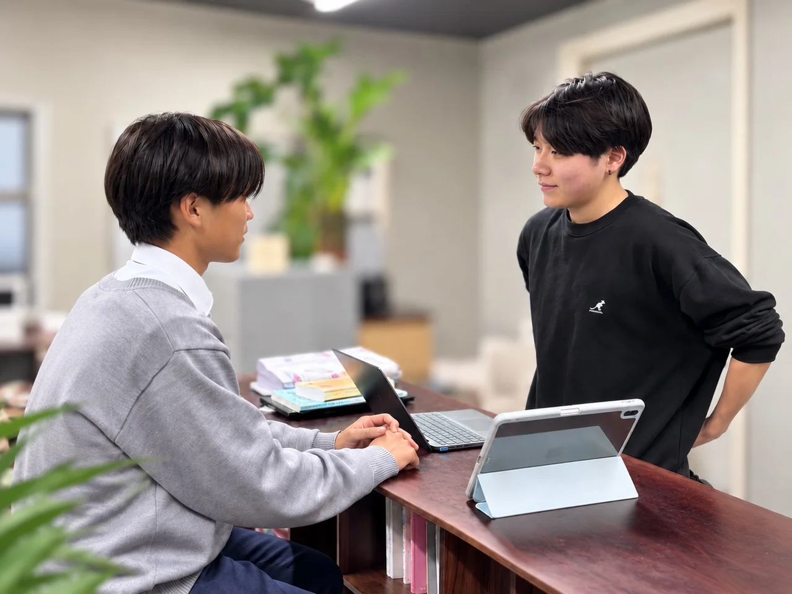

LIGHT
週3日までの通塾で、学習を習慣に。
週3日まで通塾できるプランです。利用できる日数以外はSTANDARDと同じ。学習空間と平日夜の質問対応、通塾管理システムを利用できます。
01学び方を選ぶ
勉強する場所と、進め方。
必要なサポートを選べます。
表示価格はすべて税込です。

LEARNING SUPPORT
毎日通える空間と質問対応を基本に、学習計画のサポートや1対1個別指導を組み合わせられます。
MANAGEMENTコースは、週1回の面談付き。
計画・実行・振り返り・修正を重ねます。
02通塾プラン
どのプランも、毎日通える空間・質問対応・通塾管理システムを利用できます。週3日までのLIGHT、毎日通えるSTANDARD、週1回の面談付きのMANAGEMENTから選べます。
LIGHT
週3日まで通塾できるプランです。利用できる日数以外はSTANDARDと同じ。学習空間と平日夜の質問対応、通塾管理システムを利用できます。
MANAGEMENT
STANDARDのサポートに、難関の医学部受験を突破した講師との週1回のマンツーマン面談を追加。目標から逆算して学習計画を立て、計画・実行・振り返り・修正を繰り返しながら、毎日の学習を管理します。
週1回の面談で、計画と進み具合を確認。
STANDARD
毎日通える空間と、平日夜の質問対応で、日々の勉強を支えます。
宝町校・西広島校 共通｜開校時間 7:00〜22:00 ／ 質問対応 平日18:00〜22:00
表は左右にスワイプしてご覧いただけます。
| サポート | LIGHT | MANAGEMENT | STANDARD |
|---|---|---|---|
| 月額（税込） | ¥25,000 | ¥45,000 | ¥35,000 |
| 通塾日数 | 週3日まで | 毎日 | 毎日 |
| 開校時間 | 7:00〜22:00 | 7:00〜22:00 | 7:00〜22:00 |
| 質問対応時間 | 平日18:00〜22:00 | 平日18:00〜22:00 | 平日18:00〜22:00 |
| 通塾管理システム | 利用できます | 利用できます | 利用できます |
| 週1回の面談・学習計画 | 含まれません | 含まれます | 含まれません |
031対1個別指導
難関の医学部受験を突破した広島大学医学部医学科の講師が、マンツーマンで指導。理解度や目的に合わせて学べます。90分・120分から選べます。
オンラインにも対応しています。
¥7,500 / 回
¥9,000 / 回
※個別指導は、原則月4回以上の受講となります。
04その他の学び方
学習マネジメントのみ、中学受験の個別指導、ご自宅での家庭教師。目的に合わせて選べます。
01
学習の計画と見直しに、サポートを。
¥20,000 / 月
原則月4回（週1回）の面談｜原則対面・オンラインも可能
広島大学医学部医学科の講師が、マンツーマンで学習をサポート。目標から逆算して計画を立て、進み具合を振り返りながら勉強方法を修正します。面談は原則月4回（週1回）。対面を原則とし、ご希望に応じてオンラインでも対応できます。
学習マネジメントについて02
中学受験を、1対1で支える。
90分 ¥7,500〜
※Medistudy Juniorは、原則月4回以上の受講となります。
名門・難関中学の入試を突破した広大医学部生のみが指導。集団塾だけでは解決しきれない「分からない」や「苦手」を、一つずつ解決します。
Juniorを見る03
広大医学部生の指導を、ご自宅で。
05入会金・教材費
月額・指導料とは別に、入会金がかかります。家庭教師をご利用の場合は、交通費も別途必要です。
入会金は、Medistudyに入会する際にかかる費用です。選択したコースの月額料金・個別指導料とは別にお支払いいただきます。
教材費はかかりません。
家庭教師の交通費は、指導料とは別途かかります。
06無料体験・学習相談
今の勉強の状況や、目標をお聞かせください。
必要なサポートを一緒に整理します。
入塾を決めていなくても大丈夫です。
無料体験・学習相談を申し込む公式LINEで相談する